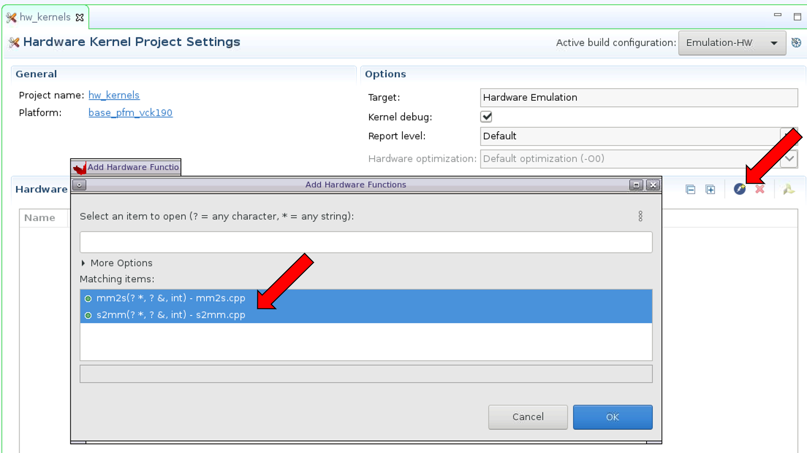
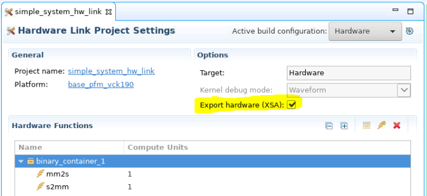
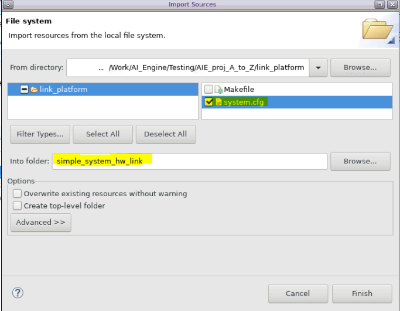
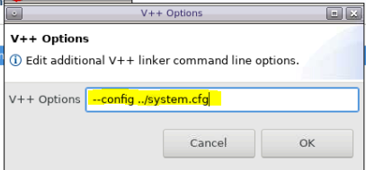
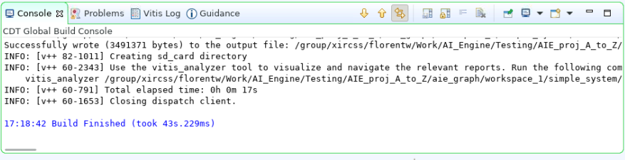

In this section of the tutorial, you will learn how to add PL kernels in HLS into the system project and build the whole system.
You now have a working application to be run on the AI Engine array. What you need now is to modify the AI Engine graph to be used in hardware and connect the AI Engine array to the PL using the Vitis compiler (V++).
Open the project.cpp file and replace the following line:
simulation::platform<1,1> platform("data/input.txt", "data/output.txt");
with
PLIO *in0 = new PLIO("DataIn1", adf::plio_32_bits,"data/input.txt");
PLIO *out0 = new PLIO("DataOut1",adf::plio_32_bits, "data/output.txt");
simulation::platform<1,1> platform(in0, out0);
The main function in project.cpp will not be used in the hardware run, so you need to add a switch (#ifdef __AIESIM__) so that main will not be taken into account for the hardware build.
#ifdef __AIESIM__
int main(void) {
mygraph.init();
mygraph.run(4);
mygraph.end();
return 0;
}
#endif
Change the Active build configuration to Hardware and rebuild the project.
In this example, HLS kernels are used which bridge between memory and the AXI4-Stream interface to input and output data from memory.
The mm2s kernel reads data from memory and inputs it to the AI Engine array.
The s2mm kernel receives output data from the AI Engine array and writes it to memory.
Open the Vitis 2021.1 IDE and select the same workspace as the AI Engine application project. Right-click the simple_application_system project and select Add Hw Kernel Project.
Name the project hw-kernels and click Finish to create the project.
Right-click the hw-kernels project and click import sources. Browse into the src folder and select the mm2s.cpp and s2mm.cpp files.
In the hw-kernels.prj page, click on the lightning icon (Add HW function) icon and select both functions (mm2s and s2mm) as hardware functions.

Now that you have imported the kernels, you need to tell the Vitis linker how to connect everything together.
In the simple_application_system_hw_link.prj page, enable Export hardware (XSA).

Now you need to tell the Vitis compiler about the connectivity of the system. This step is done using a configuration file.
Create a system.cfg file with a text editor and add the following lines.
[connectivity]
stream_connect=mm2s_1.s:ai_engine_0.DataIn1
stream_connect=ai_engine_0.DataOut1:s2mm_1.s
Note that as per the Versal ACAP AI Engine Programming Environment User Guide (UG1076), the naming convention for the compute units (or kernel instances) are <kernel>_#, where # indicates the CU instance. Thus the CU names built corresponding to the kernels mm2s and s2mm in your project are respectively mm2s_1 and s2mm_1.
The stream_connect option is defined as <compute_unit_name>.<kernel_interface_name>:<compute_unit_name>.<kernel_interface_name>.
For example, to connect the AXI4-Stream interface of the mm2s_1 (compute unit name) called s (kernel interface name) to the DataIn1 (interface name) input of the graph in the ai_engine_0 (compute unit name) IP you need the following option: stream_connect=mm2s_1.s:ai_engine_0.DataIn1.
Right-click the simple_application_system_hw_link and click import sources. Select the system.cfg file created and add it to the simple_application_system_hw_link folder.

In the simple_application_system_hw_link.prj page, right-click the binary container and click Edit v++ options.

Add the following option to link your configuration file:
--config ../system.cfg

Select the simple_application_system project and click on the hammer icon to build it. The compilation process takes some time to finish. The underlying AI Engine application project, hardware kernel project, and hardware linking project are compiled one after another. The system should build successfully with no error.

You can open the generated Vivado project in <workspace>/simple_system_hw_link/Hardware/binary_container_1.build/link/vivado/vpl/prj to take a look at the compilation result.
You can see that the Vitis compiler added the two HLS IP (mm2s and s2mm) and connected them to the memory (NoC) and AI Engine IP.


In the next step, you will create a PS bare-metal application and run the system with it.
Return to Step 2 — Go to Step 4
Licensed under the Apache License, Version 2.0 (the “License”); you may not use this file except in compliance with the License. You may obtain a copy of the License at
http://www.apache.org/licenses/LICENSE-2.0
Unless required by applicable law or agreed to in writing, software distributed under the License is distributed on an “AS IS” BASIS, WITHOUT WARRANTIES OR CONDITIONS OF ANY KIND, either express or implied. See the License for the specific language governing permissions and limitations under the License.
Copyright© 2020–2021 Xilinx
XD018